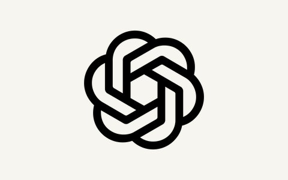
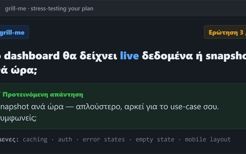
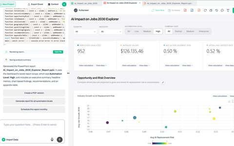
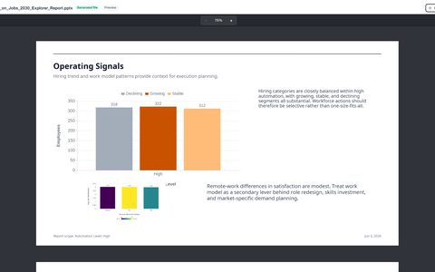

Social companion hub
Βρες το υλικό πίσω από το βίντεο.
Έρχεσαι από TikTok, Instagram ή Shorts; Διάλεξε το βίντεο και πάρε το prompt, το link, τον οδηγό ή το αρχείο που αναφέρω.
7 resources
3 prompts
15 Ιουν latest
Resource library
Όλα τα συνοδευτικά
- Founders Playbook: το MVP Ορισμός μετρήσεων, vanity metrics και 40% test πριν πιστέψεις ότι το MVP “έπιασε”.
- Founders Playbook: η ιδέα Πριν χτίσεις, έλεγξε αν υπάρχει πραγματικό πρόβλημα και ποιος το νιώθει αρκετά έντονα.
-


grill-me Skill που κάνει το AI να σε ρωτάει μία-μία τις σωστές ερωτήσεις πριν αρχίσει να φτιάχνει. -

 Thea
Το υλικό σου γίνεται οδηγός, παιχνίδι και διαγώνισμα στα ελληνικά.
Thea
Το υλικό σου γίνεται οδηγός, παιχνίδι και διαγώνισμα στα ελληνικά.
-


FindAnomaly Ανεβάζεις data και παίρνεις dashboard, anomalies και παρουσίαση σε PPT, Word ή PDF. -
 graphify
Κάνε το codebase σου knowledge graph για να το καταλαβαίνει καλύτερα το AI σου.
graphify
Κάνε το codebase σου knowledge graph για να το καταλαβαίνει καλύτερα το AI σου.
-
 CV tailoring
ATS-aware prompt για ChatGPT και Claude Projects χωρίς να αλλοιώνει το προφίλ σου.
CV tailoring
ATS-aware prompt για ChatGPT και Claude Projects χωρίς να αλλοιώνει το προφίλ σου.
-

 AI staging ακινήτων
Chatbots και εργαλεία για να δείξεις άδειους χώρους επιπλωμένους με AI.
AI staging ακινήτων
Chatbots και εργαλεία για να δείξεις άδειους χώρους επιπλωμένους με AI.
Δεν βρέθηκε κάτι με αυτά τα φίλτρα.